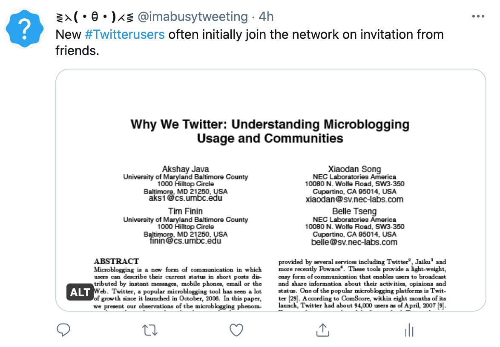
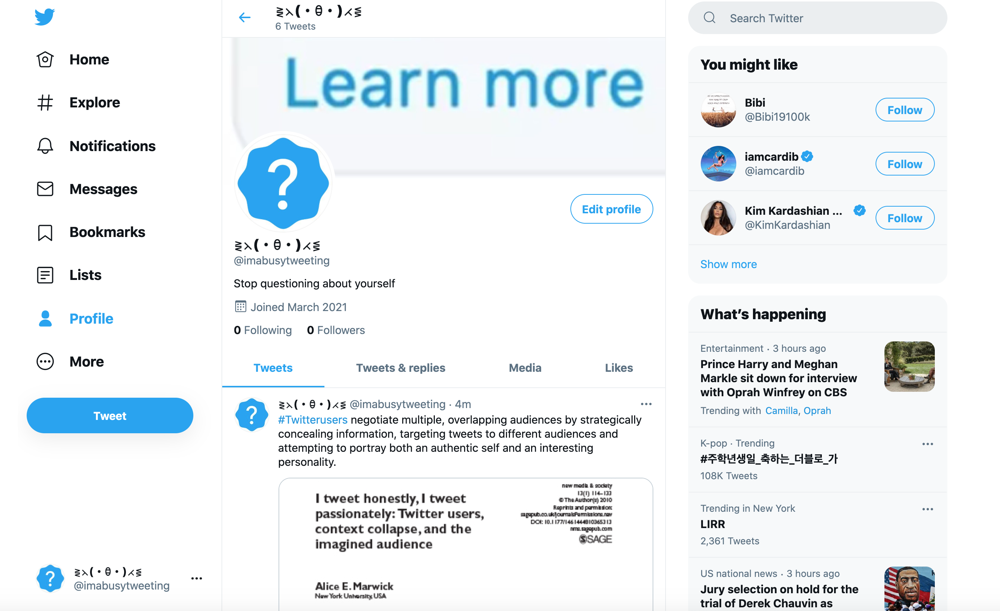

Instagram got a picture of me looking really nice today so Twitter gets a picture of me looking like the zuul pillars pic.twitter.com/g5QHr0g8qn
— 🍏 Tempura Apples 🍎 (@TemperanceAlden) March 7, 2021
instagram me n twitter me r 2 different people
— mya (@p3gmaster) March 7, 2021
People sharing good news on Instagram: 😃😃😃😃😃😃😃
— TONI TONE (@t0nit0ne) March 3, 2021
People sharing good news on Twitter: pic.twitter.com/U32ldhTjhd
#Twitterusers are younger, more likely to identify as Democrats, more highly educated and have higher incomes than U.S. adults overall. pic.twitter.com/VfxukM48SM
— ⋛⋋(・ꃪ・)⋌⋚ (@imabusytweeting) March 8, 2021
 #Twitterusers exhibit different characteristics
— ⋛⋋(・ꃪ・)⋌⋚ (@imabusytweeting) March 8, 2021
that distinguish one user from others. pic.twitter.com/BYaeoSNvg5